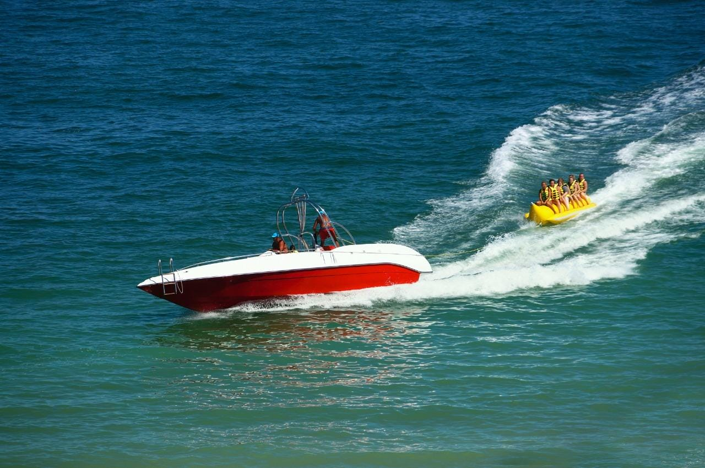
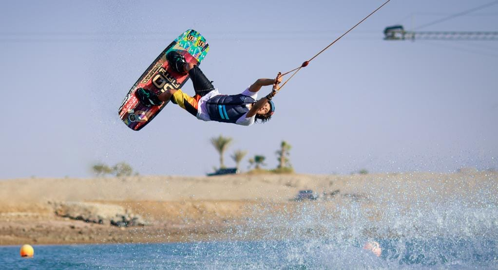

Kids love the water and have a taste for adventure too! Most of the Red Sea’s resorts and towns, from Hurghada to Marsa Alam, offer a variety of options for family fun and kid-friendly water sports. Head out on a banana boat or go tubing, hitting the waves and hanging on until the very end! Explore the deep blue sea and compete to see who can spot the most sea creatures zip by on board a glass bottom boat.

In South Sinai, families can rent a kayak or paddle boat to enjoy a couple of hours out on the calm water practicing their rhythm and coordination. Parasailing in Hurghada, Sharm al-Sheikh, or Al-Gouna offers a smooth glide through the skies, observing a panoramic view of the coastline below.

Can be found in the beach town of Al-Gouna, perfect for kids to learn how to wakeboard, and many of the Red Sea’s resort towns, such as Makadi Bay and Soma Bay, have aqua parks with meters high water slides for hours of splashy fun.